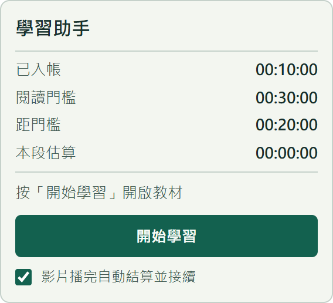

使用教學
-
登入並進入課程
在衛生福利 e 學園的課程資訊頁按「上課去」。學習助手會出現在教室左側。
-
按「開始學習」
保持課程分頁在畫面上。若影片沒有自動播放，請按影片上的播放鍵。看完影片會自動結算並接續，這個選項可取消。
檔案讀完後，可按「結算並看下一篇」。
-
查看已入帳時數
準備離開時，按「結算並查看時數」。請以課程資訊頁顯示的時數和完課條件為準。

時數沒有顯示？
按面板上的「讀取平臺時數」重試。若看不到面板，請從課程資訊頁重新進入教室。